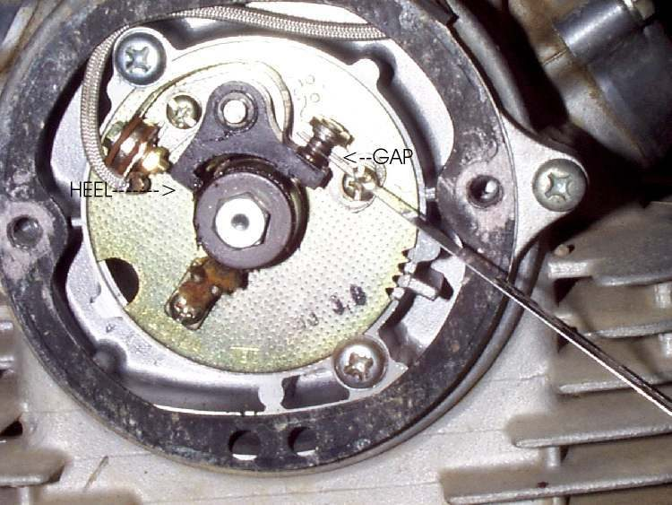

Fuel takes time to burn. At higher engine speed there is less time, so the spark must come earlier, before the piston reaches top dead centre. On points engines a spark advance unit does this. Weights and springs turn the points cam as the engine speeds up (centrifugal advance). A few engines add a vacuum unit that moves the points plate with intake vacuum. Newer engines with electronic ignition advance the spark electronically, and some small engines have fixed timing and no advance at all.
A stuck or weak advance unit leaves the spark late at speed. The engine feels flat, runs hot and loses power. This page is a visual and feel check, done while the points plate or flywheel is off.
Safety
- Switch the ignition off and disconnect the battery before you open the ignition cover.
- Remove a flywheel only with the correct puller. See Remove and refit a flywheel (rotor) with a puller.
- Mark the points plate and the cover before you move anything, so timing can be set again. See Set points gap and ignition timing (battery and coil ignition).
You need
- Access to the advance unit. It sits behind the points plate on the cam shaft, or inside the flywheel on a magneto.
- A small screwdriver and a little light grease.
- Your bike's manual to know whether your engine has advance at all.
Steps
- Find out which type your bike has: centrifugal, vacuum, electronic or none. Check the manual.
- Remove the ignition cover. Mark the points plate position with a pen.
- Look at the advance unit. It has two weights held by springs. Check for rust, dry pivots, a bent spring or missing parts.
- Turn the cam by hand to its stop, then let go. It should move smoothly against the springs and spring all the way back.
- If it is stiff or stays advanced, clean it and put a drop of oil or a smear of grease on the pivots.
- On a vacuum unit, check the diaphragm hose and the arm. The arm should move freely. Look for cracks in the hose.
- On a magneto flywheel, some units have a lever or a locating hole to hold the unit at full advance for timing. Use the method in your manual.
- Refit the points plate to the marks. Check the points gap and the timing.
How to tell
| Finding | Likely cause | Action |
|---|---|---|
| Cam sticks at one end | Dirt, rust or dry pivots | Clean and lubricate |
| Cam does not return | Weak or broken spring | Replace the unit |
| Slack in the cam on its shaft | Worn bush | Replace the unit |
| Vacuum arm does not move | Torn diaphragm or blocked hose | Replace the diaphragm unit |
Full advance on most engines is reached at a moderate engine speed. Use your bike's manual for the correct figure.
Check your work
- The cam moves freely and snaps back.
- Timing is set to the marks with the unit at the correct position.
- The engine pulls cleanly at higher speed.
If it did not fix the problem
- See Ignition timing suspected wrong.
- Check the points with Inspect, clean and replace contact breaker points.
- Have a workshop check the timing under load with a timing light. See Check the ignition timing.